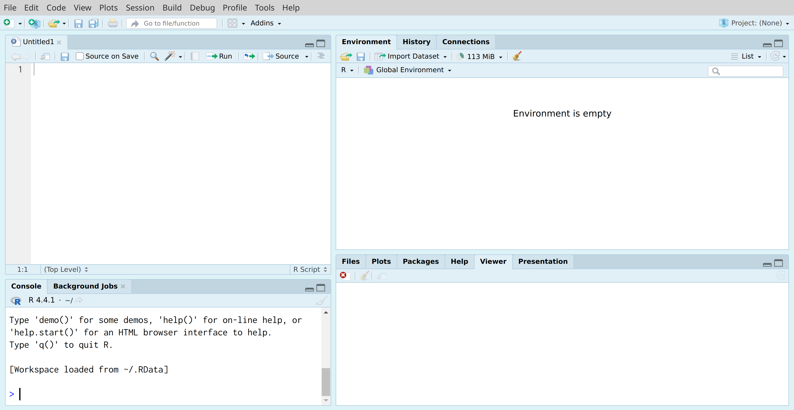
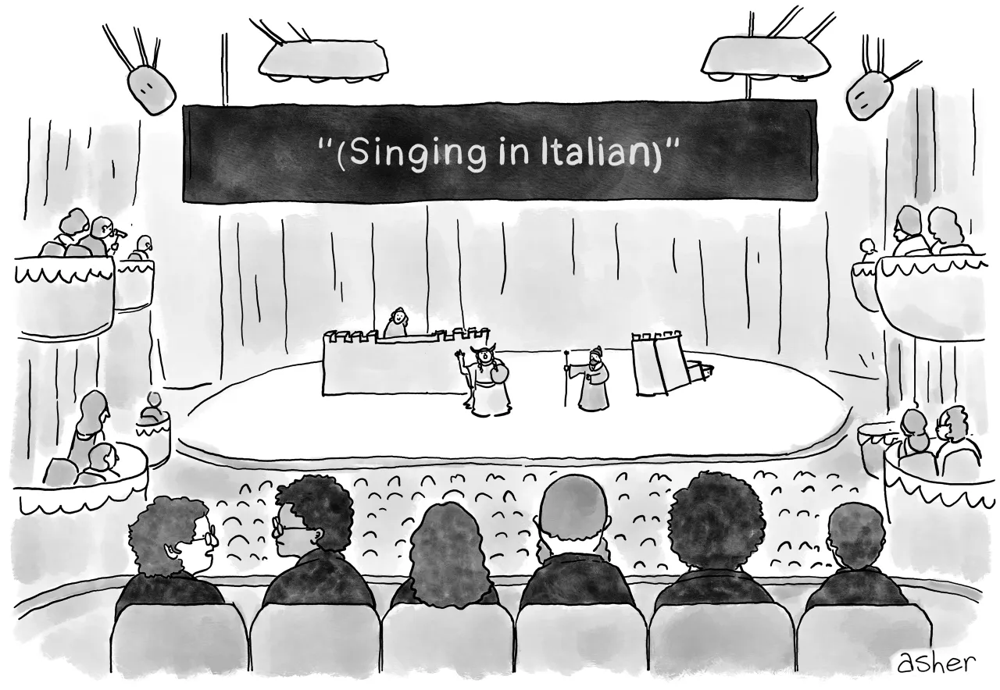
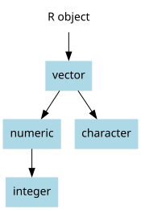
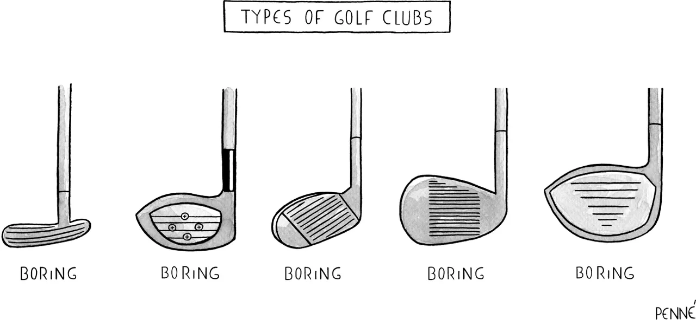
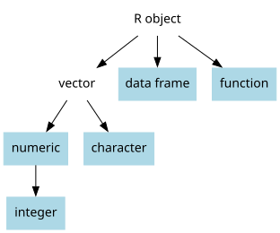

sqrt(81) pi^2 A Slower Introduction to R
UCSF Library
Thursday, October 16, 2025

🤸
Caution
Each statement (“sentence”) of code should be on its own line.
Caution
If you are writing a sentence of code that spans more than one line, always place mathematical operators before the line break rather than after the line break.
🤸
.r or .R to the end.ldl_borderline, using object assignment.ldl_high, using object assignment.ldl_borderline and ldl_high were properly defined (type each object name and press the enter or return key on your keyboard).session_2.r). Make sure to add .r or .R at the end. You might first create a folder on your computer for this workshop series.Tip
Go back and forth between the script and the console.
Tip
Use scripts as a way to save work!
Tip
Your scripts should have a sequence.
Tip
Only include code and comments.
Tip
Write comments.

Tip
Consider using more than one script.
import and prepare data.ranalyze data.rTip
Continually revisit your scripts!
The National Health and Nutrition Examination Survey (NHANES) collects data about the health of adults and children in the United States. We also collect data about what participants eat, drink, and take as supplements to determine how many nutrients are in their diet.
nhanes_l.csv, available on the CLE, contains data from the 2021–2023 implementation of NHANES🤸
Tip
Examine the code to begin to understand it.
Tip
Copy and paste the corresponding code to a script so you can later reproduce the import without having to rely on the import tool.
View() portion of the codeView()Tip
Examine the data carefully after importing a data file for the first time.
names(): for all the variable nameshead(): for the first few rowstail(): for the last few rowsstr(): for a glimpse of the data that shows variable names, object classes (more about this later), and the first few valuesdim(): for the number of rows and the number of columns, in that ordernrow(): for the number of rowsncol(): for the number of columnshead() to view the first few rows of the data.mean() function will find the mean of a set of numbersridageyr, which stores ages in yearsmean(): a function for finding the arithmetic meannhanes: the label we gave for our data when we imported it$: indicates that ridageyr is a column in nhanesridageyr: the variable namehead() and tail() functions, mentioned earlier, can be used not only to preview data but also to preview variables within data. Use these functions to view the first few, and the last few, values of the gender variable.range() function will show the range of a variable (this is, the minimum and maximum values). Use range() to find the age range of individuals in the NHANES data (the age variable is ridageyr).gendergender does not include numbers:class() function:class() function reports the object type


bpxodi1 variable stores measurements of diastolic blood pressure. Try to find the mean of this variable. You should see a value of NA.head() to take a look at the first few values of the variable. Why do you think might mean() returned NA in the first problem here? We’ll talk next week about how to approach this!
Comments